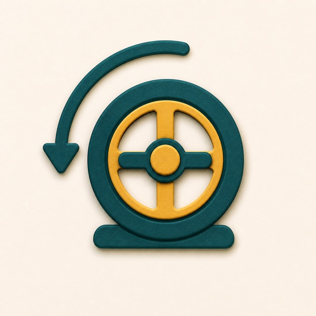
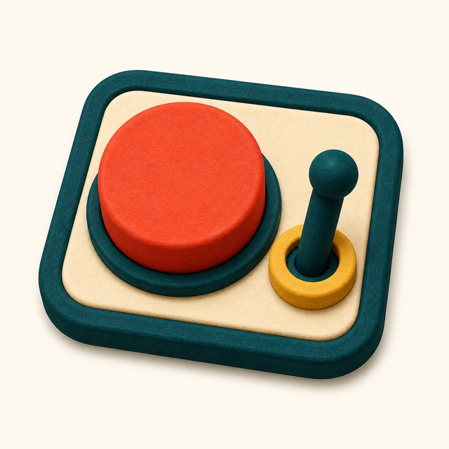
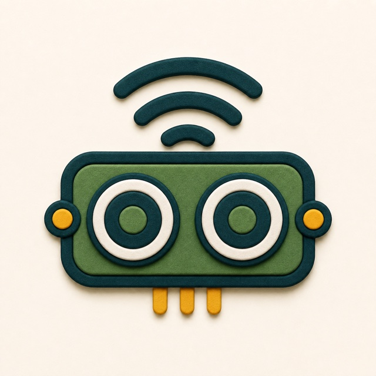
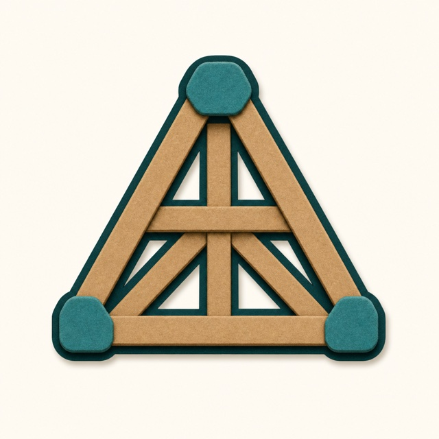
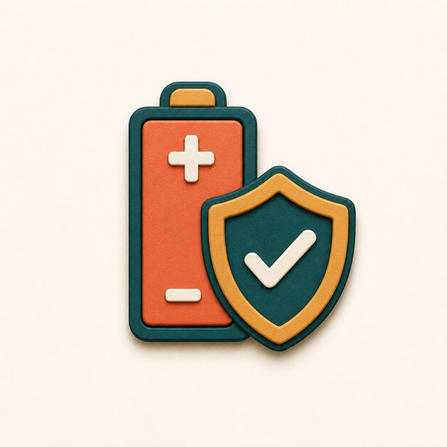
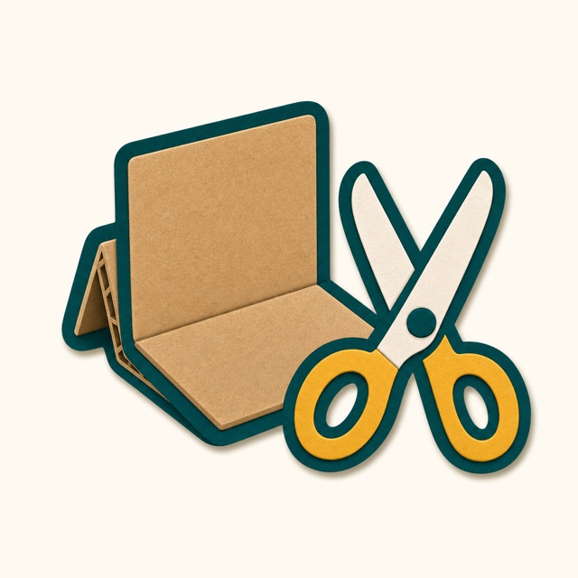
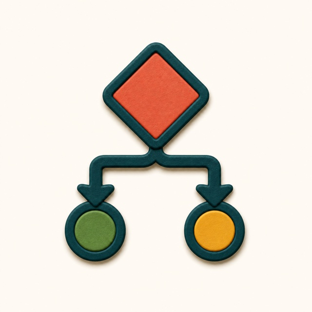
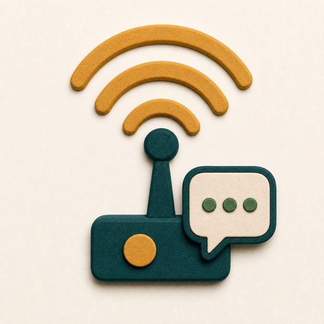
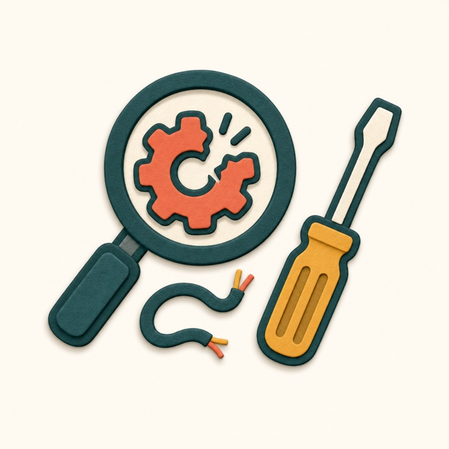
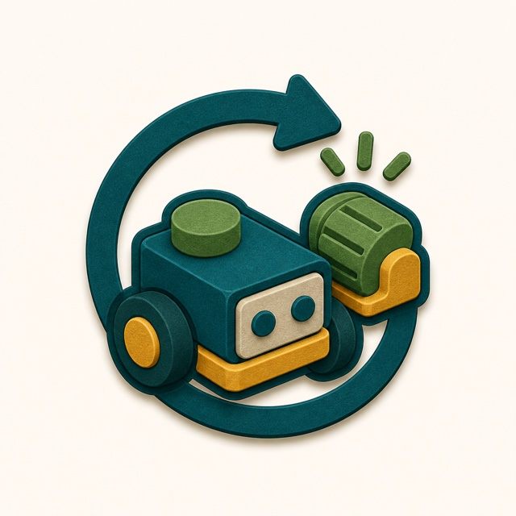

Try another card at the same level.
Useful when a child wants more practice before moving on.
Day to day, children build one power at a time, test what happened, improve it, then choose whether to repeat, stretch, switch skills or combine what they have learned.
The cards are facilitator tools for choosing a safe next challenge. They are not homework, a test, or a checklist children have to complete in order.
A child can practise inside one skill, stretch up a level, switch to a different skill, or combine powers when they are ready.
Each Skill Card is a broad practical area. It holds the specific Power Cards inside that grouping, so children can stay with one interest while choosing different challenges.

Motors, servos, wheels and mechanisms.

Buttons, switches, knobs and controllers.

Sensors for light, tilt, distance or touch.

Frames, hinges, mounts and stable builds.

Batteries, polarity, loads and safe choices.

Materials, fabrication, joins and enclosures.

Sequences, rules, timing and simple logic.

Messages, radio links, alerts and displays.

Testing, debugging, repair and evidence.

User needs, criteria, feedback and iteration.
A level is a quick way to choose the right amount of challenge. It helps children decide whether to practise, stretch, or come back later with stronger skills.
Power Cards are the day-to-day challenge cards. Choose a Skill Card and a level above to see the matching cards, each with a result image that makes the build more concrete.
The card is not finished when something works once. Children test it, notice what happened, improve one thing, then choose how to continue the loop.
Useful when a child wants more practice before moving on.
Useful when the child is ready for a harder version of the same power.
Useful when a build needs another power, such as sensing, power or structure.
Useful when the child is ready for Integration or Invention Cards.
Integration and Invention Cards are not the day-to-day starting point. They are where children use the powers they have built up across skills and levels.
Build a wheel that spins only when a child presses the chosen button.
Make a sign that changes when a sensor notices light or shadow.
Press a control to move a small sign between two positions.
These are structured challenges. The child still gets choices, but the card names the powers and levels needed so they can see how earlier practice unlocks a bigger build.
See Invention CardsInvent something that helps a classroom job happen more easily.
Create a way to send or reveal a simple message to a friend.
Make something that uses movement, signals or sensing to feel alive.
These cards are for more child-led making. Instead of prescribing the route, they set an objective and invite children to choose which built-up powers might help.
See the child flowThe point is not to finish a perfect deck. The point is to guide children through the art of the possible until they have enough powers to combine and invent with confidence.
"I want to make it move."
Repeat a comfortable level, or try a stretch.
Try the practical challenge and test what happens.
Repeat, stretch, switch skills or combine.
Integration gives structure. Invention gives more freedom.
They help children build enough practical powers to take on bigger combinations and open inventions.